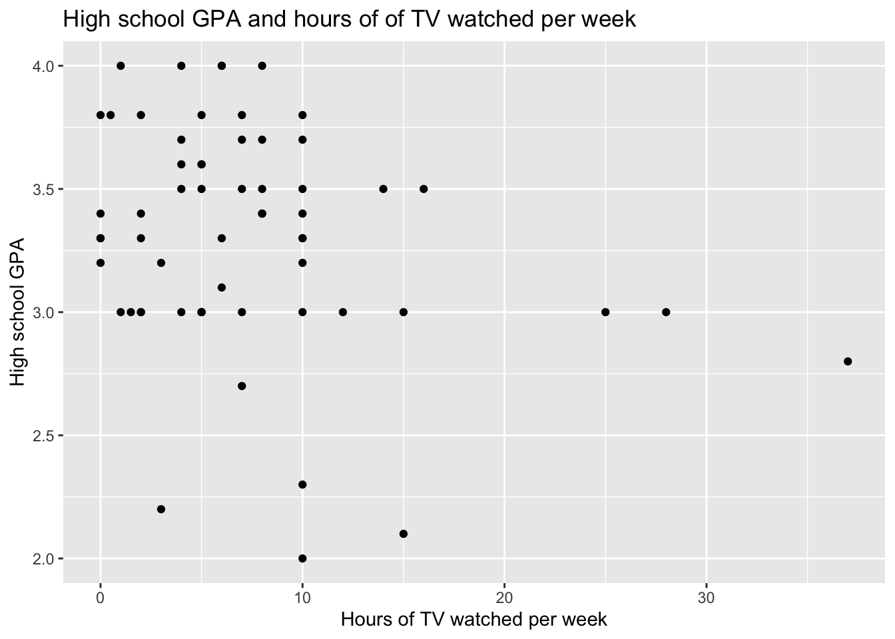

Code
library(alr4)
library(smss)
library(tidyverse)Before we dive into the homework let’s load the data.
library(alr4)
library(smss)
library(tidyverse)United Nations (Data file: UN11 in alr4) The data in the file UN11 contains several variables, including ppgdp, the gross national product per person in U.S. dollars, and fertility, the birth rate per 1000 females, both from the year 2009. The data are for 199 localities, mostly UN member countries, but also other areas such as Hong Kong that are not independent countries. The data were collected from the United Nations (2011). We will study the dependence of fertility on ppgdp.
Identify the predictor and the response.
First we’ll load the data and take a look.
data(UN11)
glimpse(UN11)Rows: 199
Columns: 6
$ region <fct> Asia, Europe, Africa, Africa, Caribbean, Latin Amer, Asia, C…
$ group <fct> other, other, africa, africa, other, other, other, other, oe…
$ fertility <dbl> 5.968, 1.525, 2.142, 5.135, 2.000, 2.172, 1.735, 1.671, 1.94…
$ ppgdp <dbl> 499.0, 3677.2, 4473.0, 4321.9, 13750.1, 9162.1, 3030.7, 2285…
$ lifeExpF <dbl> 49.49, 80.40, 75.00, 53.17, 81.10, 79.89, 77.33, 77.75, 84.2…
$ pctUrban <dbl> 23, 53, 67, 59, 100, 93, 64, 47, 89, 68, 52, 84, 89, 29, 45,…Fertility is the response variable and ppgdp is the predictor variable.
Draw the scatterplot of fertility on the vertical axis versus ppgdp on the horizontal axis and summarize the information in this graph. Does a straight-line mean function seem to be plausible for a summary of this graph?
We’ll use ggplot() to draw the scatterplot.
ggplot(UN11, aes(ppgdp, fertility)) + geom_point() +
labs(title = "Fertility by GDP per Capita", x = "GDP per capita",
y = "Fertility (birth rate per 1000 females)")
This graph shows that fertility levels can vary widely for countries with low gdp per capita, but as the gdp per capita gets larger, the fertility levels are relatively low. Given the shape, it does not seem like a straight-line mean function will be appropriate as a summary of this graph.
Draw the scatterplot of log(fertility) versus log(ppgdp) using natural logarithms. Does the simple linear regression model seem plausible for a summary of this graph? If you use a different base of logarithms, the shape of the graph won’t change, but the values on the axes will change.
We’ll use the log() function to get the natural logarithms of both variables.
UN11$log_fertility <- log(UN11$fertility)
UN11$log_ppgdp <- log(UN11$ppgdp)
ggplot(UN11, aes(log_ppgdp, log_fertility)) + geom_point() +
labs(title = "Fertility by GDP per Capita: Logarithm Edition",
x = "Log of GDP per capita",
y = "Log of Fertility (birth rate per 1000 females)") +
geom_smooth(method = "lm")`geom_smooth()` using formula = 'y ~ x'This graph does lend itself well to using a linear regression model. We’ve added an OLS line here using the geom_smooth() function.
Annual income, in dollars, is an explanatory variable in a regression analysis. For a British version of the report on the analysis, all responses are converted to British pounds sterling (1 pound equals about 1.33 dollars, as of 2016).
First, let’s create some data we can use to investigate the answers to these questions.
# create initial dataset
x_US <- rnorm(100, mean = 50, sd = 10)
y <- 2 * x_US + rnorm(100, mean = 0, sd = 5)
df <- data.frame(x_US, y)
# create additional variable that converts x variable into pounds sterling
df$x_UK <- df$x_US*(1/1.33)How, if at all, does the slope of the prediction equation change?
To answer this question we’ll run a linear regression for both x_US and y, and x_UK and y and compare the coefficients.
## US dollars
LR_US <- lm(formula = y ~ x_US, data = df)
summary(LR_US)$coefficients Estimate Std. Error t value Pr(>|t|)
(Intercept) 3.150123 2.59153772 1.215542 2.270796e-01
x_US 1.949919 0.05204747 37.464236 6.901293e-60## UK pounds sterling
LR_UK <- lm(formula = y ~ x_UK, data = df)
summary(LR_UK)$coefficients Estimate Std. Error t value Pr(>|t|)
(Intercept) 3.150123 2.59153772 1.215542 2.270796e-01
x_UK 2.593392 0.06922314 37.464236 6.901293e-60The coefficients are different, indicating that the slope did change with the different currency. The signs are the same (both slopes are positive and indicate a positive relationship), but the slope of the regression with pounds sterling is steeper.
How, if at all, does the correlation change?
We’ll run the cor() function to compare the correlations.
cor(df$x_US, df$y, method = "pearson")[1] 0.9668169cor(df$x_UK, df$y, method = "pearson")[1] 0.9668169The correlations appears to be the same for pounds sterling and US dollars.
Water runoff in the Sierras (Data file: water in alr4) Can Southern California’s water supply in future years be predicted from past data? One factor affecting water availability is stream runoff. If runoff could be predicted, engineers, planners, and policy makers could do their jobs more efficiently. The data file contains 43 years’ worth of precipitation measurements taken at six sites in the Sierra Nevada mountains (labeled APMAM, APSAB, APSLAKE, OPBPC, OPRC, and OPSLAKE) and stream runoff volume at a site near Bishop, California, labeled BSAAM. Draw the scatterplot matrix for these data and summarize the information available from these plots.
pairs(water)
It looks as thought the variable that captures stream runoff volume (BSAAM) correlates rather highly with the variables, OPBPC, OPRC, and OPSLAKE. In fact, it looks as though all of those variables have a strong linear and positive relationship with each other.
While the relationship between BSAAM and the other sites (APMAM, APSAB, APSLAKE) does not appear to be strong, those sites all seem to have a positive linear relationship with each other.
It is worth noting the Years variable does not appear to have a meaningful relationship with the other variables.
Professor ratings (Data file: Rateprof in alr4) In the website and online forum RateMyProfessors.com, students rate and comment on their instructors. Launched in 1999, the site includes millions of ratings on thousands of instructors. The data file includes the summaries of the ratings of 364 instructors at a large campus in the Midwest (Bleske-Rechek and Fritsch, 2011). Each instructor included in the data had at least 10 ratings over a several year period. Students provided ratings of 1–5 on quality, helpfulness, clarity, easiness of instructor’s courses, and raterInterest in the subject matter covered in the instructor’s courses. The data file provides the averages of these five ratings. Create a scatterplot matrix of these five variables. Provide a brief description of the relationships between the five ratings.
Let’s first take a closer look at the data so we know the names of the variables we’re interested in.
glimpse(Rateprof)Rows: 366
Columns: 17
$ gender <fct> male, male, male, male, male, male, male, male, male, …
$ numYears <int> 7, 6, 10, 11, 11, 10, 7, 11, 11, 7, 11, 6, 4, 10, 11, …
$ numRaters <int> 11, 11, 43, 24, 19, 15, 17, 16, 12, 18, 11, 33, 23, 34…
$ numCourses <int> 5, 5, 2, 5, 7, 9, 3, 3, 4, 4, 4, 4, 5, 2, 8, 5, 2, 7, …
$ pepper <fct> no, no, no, no, no, no, no, no, no, no, no, yes, no, y…
$ discipline <fct> Hum, Hum, Hum, Hum, Hum, Hum, Hum, Hum, Hum, Hum, Hum,…
$ dept <fct> English, Religious Studies, Art, English, Spanish, Spa…
$ quality <dbl> 4.636364, 4.318182, 4.790698, 4.250000, 4.684211, 4.23…
$ helpfulness <dbl> 4.636364, 4.545455, 4.720930, 4.458333, 4.684211, 4.26…
$ clarity <dbl> 4.636364, 4.090909, 4.860465, 4.041667, 4.684211, 4.20…
$ easiness <dbl> 4.818182, 4.363636, 4.604651, 2.791667, 4.473684, 4.53…
$ raterInterest <dbl> 3.545455, 4.000000, 3.432432, 3.181818, 4.214286, 3.91…
$ sdQuality <dbl> 0.5518564, 0.9020179, 0.4529343, 0.9325048, 0.6500112,…
$ sdHelpfulness <dbl> 0.6741999, 0.9341987, 0.6663898, 0.9315329, 0.8200699,…
$ sdClarity <dbl> 0.5045250, 0.9438798, 0.4129681, 0.9990938, 0.5823927,…
$ sdEasiness <dbl> 0.4045199, 0.5045250, 0.5407021, 0.5882300, 0.6117753,…
$ sdRaterInterest <dbl> 1.1281521, 1.0744356, 1.2369438, 1.3322506, 0.9749613,…Now let’s use the pairs() function to take a look at how these variables relate to one another.
pairs(Rateprof[, c("quality", "helpfulness", "clarity", "easiness", "raterInterest")])
It appears as if quality, helpfulness, and clarity all have a strong positive linear relationship with one another. Interestingly, quality and helpfulness and quality and clarity both seem to correlate slightly more with one another than helpfulness and clarity. The relationship between easiness and the other variables looks to be a fairly weak positive correlation. Similarly, raterInterest seems to have a weak positive linear relationship with the other variables.
For the student.survey data file in the smss package, conduct regression analyses relating (by convention, y denotes the outcome variable, x denotes the explanatory variable) y = political ideology and x = religiosity, and y = high school GPA and x = hours of TV watching.
Let’s load the data and take a closer look.
data(student.survey)
glimpse(student.survey)Rows: 60
Columns: 18
$ subj <int> 1, 2, 3, 4, 5, 6, 7, 8, 9, 10, 11, 12, 13, 14, 15, 16, 17, 18, 19…
$ ge <fct> m, f, f, f, m, m, m, f, m, m, m, f, m, m, f, f, f, m, m, f, f, f,…
$ ag <int> 32, 23, 27, 35, 23, 39, 24, 31, 34, 28, 23, 27, 36, 28, 28, 25, 4…
$ hi <dbl> 2.2, 2.1, 3.3, 3.5, 3.1, 3.5, 3.6, 3.0, 3.0, 4.0, 2.3, 3.5, 3.3, …
$ co <dbl> 3.5, 3.5, 3.0, 3.2, 3.5, 3.5, 3.7, 3.0, 3.0, 3.1, 2.6, 3.6, 3.5, …
$ dh <int> 0, 1200, 1300, 1500, 1600, 350, 0, 5000, 5000, 900, 253, 190, 245…
$ dr <dbl> 5.0, 0.3, 1.5, 8.0, 10.0, 3.0, 0.2, 1.5, 2.0, 2.0, 1.5, 3.0, 1.5,…
$ tv <dbl> 3, 15, 0, 5, 6, 4, 5, 5, 7, 1, 10, 14, 6, 3, 4, 7, 6, 5, 6, 25, 4…
$ sp <int> 5, 7, 4, 5, 6, 5, 12, 3, 5, 1, 15, 3, 15, 10, 3, 6, 7, 9, 12, 0, …
$ ne <int> 0, 5, 3, 6, 3, 7, 4, 3, 3, 2, 1, 7, 12, 1, 1, 1, 3, 6, 2, 0, 4, 7…
$ ah <int> 0, 6, 0, 3, 0, 0, 2, 1, 0, 1, 1, 0, 5, 2, 0, 0, 10, 10, 2, 2, 1, …
$ ve <lgl> FALSE, FALSE, FALSE, FALSE, FALSE, FALSE, FALSE, FALSE, FALSE, FA…
$ pa <fct> r, d, d, i, i, d, i, i, i, i, r, d, d, i, d, i, i, d, i, d, i, i,…
$ pi <ord> conservative, liberal, liberal, moderate, very liberal, liberal, …
$ re <ord> most weeks, occasionally, most weeks, occasionally, never, occasi…
$ ab <lgl> FALSE, FALSE, FALSE, FALSE, FALSE, FALSE, FALSE, FALSE, FALSE, FA…
$ aa <lgl> FALSE, FALSE, FALSE, FALSE, FALSE, FALSE, FALSE, FALSE, FALSE, FA…
$ ld <lgl> FALSE, NA, NA, FALSE, FALSE, NA, FALSE, FALSE, NA, FALSE, FALSE, …The first pair of variables are currently ordinal variables. In order to run a regression, let’s convert the values to numeric.
student.survey_i <- student.survey %>%
mutate("pol_ideo" = case_when(
pi == "very liberal" ~ 1,
pi == "liberal" ~ 2,
pi == "slightly liberal" ~ 3,
pi == "moderate" ~ 4,
pi == "slightly conservative" ~ 5,
pi == "conservative" ~ 6,
pi == "very conservative" ~ 7)) %>%
mutate("religiosity" = case_when(
re == "never" ~ 1,
re == "occasionally" ~ 2,
re == "most weeks" ~ 3,
re == "every week" ~ 4))First we’ll explore the relationship between political ideology and religiosity. (i) y = political ideology and x = religiosity
Graphically portray how the explanatory variable relates to the outcome variable in each of the two cases.
We can explore this relationship and our finding with a visual depiction of the data.
The scatterplot of this data is a little awkward because of the nature of the data (that it was originally ordinal variables).
ggplot(student.survey_i, aes(religiosity, pol_ideo)) +
geom_point() +
geom_smooth(method = "lm") +
labs(title = "Political Ideology and Religiosity", x = "Religiosity", y = "Political Ideology")`geom_smooth()` using formula = 'y ~ x'Let’s see what it looks like in a bar chart. We’ll use the original variables so that R recognizes them as ordinal.
ggplot(student.survey_i, aes(re, fill = pi)) +
geom_bar() +
labs(title = "Political Ideology and Religiosity", x = "How often respondents attend religious services", y = "Count", fill = "Political Ideology") +
theme(axis.text.x = element_text(angle = 45, hjust = 1))This chart illustrates the relationship a little better. You can see that pretty much all of the respondents who identified as “very conservative” also reported attending religious services “every week”, which is the most frequent choice available.
Summarize and interpret results of inferential analyses.
We can run the linear regression with the numeric variables we made earlier.
pol_reg <- lm(pol_ideo ~ religiosity, data = student.survey_i)
summary(pol_reg)
Call:
lm(formula = pol_ideo ~ religiosity, data = student.survey_i)
Residuals:
Min 1Q Median 3Q Max
-2.81243 -0.87160 0.09882 1.12840 3.09882
Coefficients:
Estimate Std. Error t value Pr(>|t|)
(Intercept) 0.9308 0.4252 2.189 0.0327 *
religiosity 0.9704 0.1792 5.416 1.22e-06 ***
---
Signif. codes: 0 '***' 0.001 '**' 0.01 '*' 0.05 '.' 0.1 ' ' 1
Residual standard error: 1.345 on 58 degrees of freedom
Multiple R-squared: 0.3359, Adjusted R-squared: 0.3244
F-statistic: 29.34 on 1 and 58 DF, p-value: 1.221e-06The results of this regression indicate that there is a positive and significant relationship between religiosity and political ideology (p-value 1.22e-06 <0.001), with people who report being more conservative also reporting being more likely to attend religious services often. The R-squared value is also fairly high (0.3359), indicating that the model is a relatively good fit.
Now let’s take a look at the second set of variables and explore their relationship. (ii) y = high school GPA and x = hours of TV watching.
Graphically portray how the explanatory variable relates to the outcome variable in each of the two cases.
Since both of these variables are continuous this relationship lends itself well to being visualized with a scatterplot.
ggplot(student.survey_i, aes(tv, hi)) +
geom_point() +
labs(title = "High school GPA and hours of of TV watched per week", x = "Hours of TV watched per week", y = "High school GPA")
This visualization indicates there is a negative relationship between the number of hours of tv watched per week and high school GPA.
Summarize and interpret results of inferential analyses.
gpa_tv <- lm(hi ~ tv, data = student.survey_i)
summary(gpa_tv)
Call:
lm(formula = hi ~ tv, data = student.survey_i)
Residuals:
Min 1Q Median 3Q Max
-1.2583 -0.2456 0.0417 0.3368 0.7051
Coefficients:
Estimate Std. Error t value Pr(>|t|)
(Intercept) 3.441353 0.085345 40.323 <2e-16 ***
tv -0.018305 0.008658 -2.114 0.0388 *
---
Signif. codes: 0 '***' 0.001 '**' 0.01 '*' 0.05 '.' 0.1 ' ' 1
Residual standard error: 0.4467 on 58 degrees of freedom
Multiple R-squared: 0.07156, Adjusted R-squared: 0.05555
F-statistic: 4.471 on 1 and 58 DF, p-value: 0.03879This linear regression model indicates that the relationship between these variables is negative, as we could see from the scatterplot above. It is also significant (p-vlue 0.0388 < 0.05). The R-squared is not as large as the previous relationship we explored, indicating the model is not as good of a fit.